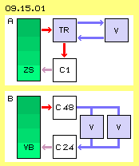
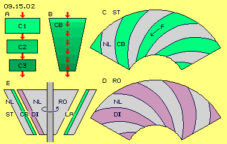
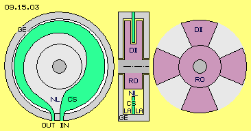
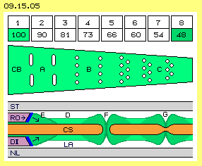
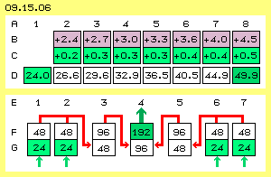
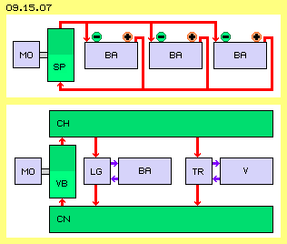
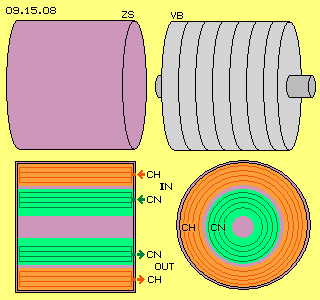
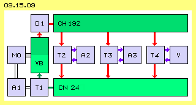
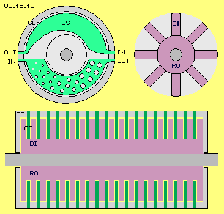
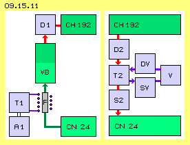

Zielsetzung

In diesem Bild unten bei B ist der Ansatz der neuen ´Booster-Konzeption´ skizziert. Aus einer Ladungsquelle (C24, weiß) niedriger Spannung strömt Ladung in den ´Volt-Booster´ (VB, grün), in welchem die Spannung hoch-transformiert wird in einen Speicher (C48, weiß) erhöhter Spannung. Der Strom aus der Spannungsdifferenz kann durch mehrere Verbraucher (V, blau) genutzt werden.
Verdichten auf kleine Fläche
Diese Verdichtung könnte auch kontinuierlich erfolgen, wenn der Speicher in Form eines sich verjüngenden Bandes angelegt wird. Dieses Speicherband CB ist im Bild bei B skizziert. Diese Verjüngung ergibt sich zum Beispiel, wenn das Speicherband entlang eines Kegels angelegt wird - und das erinnert an den oben genannten ´Tilley-Kegel-Generator´ (sofern meine Interpretation seiner wagen Andeutungen zutreffend war).

Oben rechts bei C ist die Mantel-Abwicklung des Kegelstumpfes vom Stator ST dargestellt. Auf dem nicht-leitenden Material (NL, grau) sind hier z.B. vier Speicherbänder (CB, hellgrün) angeordnet. Sie sind am weiten Ende des Kegels relativ breit und werden schmaler zum engen Ende des Kegelstumpfes. Die Bänder sind diagonal angeordnet. Vom weiten zum engen Ende des Kegels weisen sie vorwärts im Drehsinn des Systems (hier immer links-drehend unterstellt).
Unten rechts bei D ist die Mantel-Abwicklung des Rotors (RO) dargestellt (hier in gleicher Größe gezeichnet, real müsste er etwas kleiner sein). Auf dem nicht-leitenden Material (NL, grau) sind Dielektrikum-Bänder (DI, violett) erhaben angebracht. Hier sind vier solcher Bänder eingezeichnet. Deren Kontur ist identisch mit den Speicherbändern. Sie sind ebenfalls diagonal angeordnet, allerdings sind diese Bänder nun am weiten Ende vorn im Drehsinn. Beide Bänder stehen damit etwa rechtwinkelig zueinander. Während der Drehung des Rotors wird die Ladung auf den Speicherbändern zum engen Ende hin geschoben (siehe Pfeil oben bei F). Da der Rotorkegel aus nicht-leitendem Material besteht, könnten die Dielektrikum-Bänder aus dem gleichen Material gebildet werden und als Stege bzw. Rippen aus der Oberfläche heraus ragen.
Mit dieser Konstruktion könnte es Tilley durchaus gelungen sein, mehr Leistung aus einer Batterie heraus zu holen, indem Ladung auf jeweils kleinere Fläche komprimiert und damit höhere Spannung erzeugt wird. Er sagte, das Material dieses Spinners wäre in jedem Baumarkt für geringes Geld zu haben - was bei dieser simplen Konstruktion durchaus zutrifft. Als Problem seines ´Spinners´ nannte er die Isolierung des Gehäuses. Offensichtlich hatte er Verluste durch Abstrahlung von Ladung. Ein Grund dafür könnte sein, dass die Rückseiten der Speicherbänder zwar in nicht-leitendes Material eingebettet sind, aber dennoch Ladung bei der Verdrängung dorthin ausweichen kann.
Speicherscheibe 
In diesem Bild ist links ein Querschnitt durch das Gehäuse (GE, grau) dargestellt. Das vorige Speicherband steht hier quer zur Längsachse in Form einer Scheibe (CS, hellgrün). Diese Speicherfläche ist ringförmig entlang der Innenseite des Gehäuses angeordnet. Die Speicherfläche hat eine Verbindung für den Einlass und eine für den Auslass (IN und OUT). Beim Einlass reicht die Fläche weit nach innen, so dass dort die Fläche relativ groß ist. Sie wird (im Drehsinn) zunehmend kleiner, so dass am Auslass die Fläche nur noch etwa halb so groß ist. Diese Scheibe kann direkt am Gehäuse befestigt sein. Allerdings wird durch den Rotor die Luft im Innenraum herum gewirbelt. Darum sollte die Speicherscheibe eingefügt sein in eine Scheibe aus nicht-leitendem Material (NL, hellgrau), so dass eine insgesamt plane Fläche gegeben ist.
In der Mitte des Bildes ist ein Längsschnitt durch die Systemachse schematisch dargestellt (eine Situation in der oberen Hälfte und eine andere in der unteren Hälfte). Oben sind beide Seiten der Speicherscheibe momentan vom Dielektrikum (DI, violett) bedeckt. Wenn der Rotor (RO) sich dreht, ergibt sich seitlich freier Raum. In diesen ragen die Schwingungen der Ladung (LA) hinaus. Diese Situation ist unten in diesem Längsschnitt skizziert.
Sieben Module, acht Sektionen
Der Rotor wurde oben als vier-armiger Stern gezeichnet. Es sind dann immer vier Abschnitte vom Dielektrikum bedeckt und in den vier Abschnitten dazwischen kann die Ladung in den Raum hinaus reichen. Die Abschnitte (1 bis 8, erste Zeile in Bild 09.15.05) sollen jeweils geringere Fläche aufweisen. Wenn deren Breite jeweils um 1/10 schmäler wird (z.B. von 100 auf 90 und 81 usw. auf zuletzt 48, siehe zweite Zeile im Bild) ergibt sich am Ende etwa die halbe Breite bzw. Fläche. Wenn über dieses sich verjüngende Speicherband (CB, hellgrün) das Dielektrikum hinweg streicht (hier von links nach rechts), wird die Ladung komprimiert und zum Auslass hin wird doppelte Spannung erreicht.
Damit kein ´Schlupf´ auftritt, sollte das Speicherband (CB, hellgrün) in Sektionen eingeteilt sein, z.B. indem Engstellen durch Schlitze gebildet werden (wie bei A skizziert). Dieses konstruktive Element wurde von der Testatika übernommen, wo solche Schlitze in den Speicherflächen angebracht sind (und laut Aussage des Konstrukteurs Baumann von großer Bedeutung sind). Die Sektionen könnten auch durch eine Reihe von Löchern gebildet werden (wie bei B skizziert), auch in mehreren Reihen versetzt zueinander (wie bei C skizziert). Diese Aussparungen könnten 1 bis 2 mm groß sein, mit gerundeten Kanten und etwa 3 bis 5 mm Abstand zueinander (wobei das Optimum experimentell zu bestimmen ist). Die Bedeutung dieser ´Perforation´ wird aus dem unteren Abschnitt des Bildes ersichtlich.
Perforation 
Links im Bild ist ein Teil des Rotors (bzw. des Dielektrikums, RO und DI, violett) eingezeichnet, welcher sich nach rechts bewegt (siehe Pfeil). Dessen Frontseite sollte ´pflug-förmig´ angestellt sein und aus Metall (blau) bestehen, wie in vorigem Kapitel beschrieben wurde: dieses Bauelement rotiert fortwährend in einem mit Ladung erfüllten Raum und gleitet ständig über die geladene Speicherfläche. Darum wird auch bald Ladung an diesem dielektrischen Material und an seiner Metall-Front haften. Dieses Bauelement übt Druck auf die Speicherfläche aus (siehe diagonale Pfeile), indem es den Raum materiell einnimmt und zusätzlich durch seine eigene Ladung. An der Speicher-Oberfläche wird Ladung aufgetürmt (bei E) und vorwärts verfrachtet.
Bei F wird durch eine Aussparung in der Speicherfläche ein Loch gebildet. Dadurch ergibt sich aber keine Vertiefung der Ladung. Vielmehr stehen sich an den Innenwänden des Lochs gegensinnig schwingende Ladungen gegenüber, so dass an den Grenzflächen (dunkelgrüne Linien) ´Stress´ im Äther aufkommt. Das Loch bildet praktisch einen Faraday-Becher, so dass die Ladung am Rand verdichtet und angehäuft wird (dunkelgrüner Bereich). Auch eine Vertiefung in der Speicher-Oberfläche (bei G) ist schon ausreichend, um einen ´Hügel´ in der Ladungs-Schicht aufzutürmen.
Verstärkter Schub
Wenn sich das Dielektrikum einem Loch oder einer Vertiefung nähert, wird seine bereits aufgetürmte Ladung dort hinein gedrückt (siehe Pfeil bei E). Es findet eine Reflektion statt und die Verwirbelung überhöht nochmals den oben beschriebenen Ladungs-Hügel. Damit wird ein sehr viel größerer Anteil Ladung durch das Dielektrikum erfasst und nach vorn transportiert. Andererseits bewirkt der impulsive Aufprall von Ätherbewegung an den Flächen der Löcher und Vertiefungen eine ´Erschütterung´ der Atome des Leiters. An dessen äußerem Bereich entsteht damit auch eine ´materielle´ Bewegung - d.h. nicht nur Ladungs-Bewegung, sondern auch Strom (wie im folgenden Kapitel detailliert wird).
Durch diese ´Perforation´ der Leiteroberfläche wird der Effekt der Ladungs-Verschiebung und damit der Generierung von Strom hoher Spannung ganz wesentlich verstärkt. Diese Technik sollte darum auch beim ´Elektro-Ring-Generator´ des vorigen Kapitels eingesetzt werden. Welches Ergebnis dabei zu erreichen ist, wird im folgenden Bild 09.15.06 dargestellt.
Ladungs-Akkumulation
Analog dazu wird in den folgenden Sektionen jeweils 1/10 der Ladung nach vorn geschoben und dieser Anteil um 1/10 verdichtet. Nach kurzer Zeit werden die Sektionen von links nach rechts mehr Ladungs-Einheiten aufweisen. Bei dieser sanften Steigerung gibt es keinen ´Schlupf´ bzw. kein Rückwärts-Fließen: wenn z.B. aus Sektion 3 durch das Dielektrikum 3.0 Einheiten nach vorn geschoben werden, hinterlässt es eine ´leer-gefegte´ Sektion von 29.6 - 3.0 = 26.6 Einheiten. Dies entspricht exakt dem Ladungs-Schwall, welcher das nachfolgende Dielektrikum in Sektion 2 nach vorn schiebt (also mit minimalem Widerstand).

Mehrstufige Kompression
In die Module 1 und 2 wird Ladung entsprechend zur Spannung von 24 V eingebracht (hellgrün markiert). Nach obigem Verfahren ergeben sich 48 V in den achten Sektionen bzw. am Auslass. Beide Ladungsmengen werden in den Einlass des Moduls 3 geführt. Dessen erste Sektion kann diese Ladung problemlos auf ihrer (doppelt-) großen Fläche aufnehmen. In dieser zweiten Stufe wird Ladung von 48 V auf 96 V am Ausgang angehoben. Analog dazu ist der Prozess rechts in den Modulen 7, 6 und 5 angelegt (siehe rote Pfeile). In der dritten Stufe wird die Ladung aus den Modulen 3 und 5 noch einmal zusammen geführt in den Einlass von Modul 4. An dessen Auslass steht letztlich alle Ladung mit einer Spannung von 192 V bereit (siehe grünen Pfeil).
Auf welche Spannung die Ladungen real anzuheben ist, können nur reale Experimente ergeben. Bei der Verdrängung von 10 Prozent ergibt diese dreistufige ´Pumpe´ (mit 24-48-96-192) die achtfache Spannung. Wenn nur 5 Prozent erfasst würden, wird etwa dreifache Spannung (24-36-54-81) erreicht. Wenn andererseits 15 Prozent der Ladung erfasst würden, ergibt Faktor 3 vielfach höhere Werte (24-72-216-648).
Leistungs-Zugewinn
Wenn das Dielektrikum aus der Sektion 1 ein Zehntel der dortigen 24 Ladungseinheiten vorwärts schieb, weist danach diese ´leere´ Sektion noch 21.6 Einheiten auf. Es müssen also 2.4 Einheiten nachgeladen werden, vier mal in den obigen Modulen 1 und 2 sowie 6 und 7, innerhalb einer zeitlichen Phase, mit 24 V Eingangs-Spannung. Die am Einlass nachgeladene Menge wird durch das ganze System vorwärts geschoben und die gleiche Menge verlässt am Auslass des Moduls 4 das System, in gleicher zeitlicher Folge, jedoch mit 192 V Ausgangs-Spannung. Der entscheidende Leistungsgewinn gegenüber einem normalen Trafo besteht also darin, dass die gleiche Stromstärke verfügbar ist, aber mit höherer Spannung. Die entscheidende Differenz zu einem normalen Generator besteht darin, dass dieser Volt-Booster sehr viel weniger Kraft für den mechanische Antrieb erfordert.
Auch in diesem System muss Ladung verlagert werden, wobei allerdings die Bewegung des Dielektrikums entlang einer Leiterfläche nahezu kräfte-neutral ist (wie in vorigem Kapitel zum ´Kondensator-Mysterium´ erläutert wurde). Wenn Strom durch die Speicherscheiben fließt, treten auch dort elektromagnetische Kräfte auf (immer vorwärts-links-drehend). Es sind hier aber keine Gegenkräfte wirksam. Es fließt immer nur die Ladung bzw. der Strom vollkommen abgeschirmt innerhalb des isolierenden Gehäuses, immer in gleicher Richtung vorwärts. Die eigentliche Leistung wird hier durch den Freien Äther eingebracht, indem dieser die (auf kleinere Fläche) komprimierte Ladung mit erhöhtem Druck zum Verbraucher führt. Laut Tilley soll ein Drittel der Leistung ausreichen zur Aufrechterhaltung des laufenden Betriebs, so dass zwei Drittel der Leistung für den Antrieb des Fahrzeuges bzw. für die Elektro-Geräte seiner Werkstatt verfügbar waren. Auch bei vergleichbaren Systemen wird dieses Drittel genannt, z.B. auch bei Wärmepumpen, die zusätzliche Energie aus der Umgebungswärme abziehen.
Prinzipieller Aufbau
Ganz so einfach funktioniert das jedoch nicht. Die Elektronen verlassen den Plus-Pol nicht ´freiwillig´, beispielsweise zum Starten des Ladeprozesses. Der Strom aus Batterien muss immer in einem geschlossenen Kreislauf fließen, normalerweise vom Minus- in den Plus-Pol. Aber auch beim Laden der Batterien muss für die chemischen Prozesse der Überschuss / Mangel an Elektronen immer konstant sein. Darum sind gerade für das Starten des Spinners zusätzliche Elemente notwendig, z.B. Kondensatoren oder Zwischenspeicher.

Mit diesen Zwischenspeichern ist man nicht mehr gebunden an den Zwang der geschlossenen Kreisläufe bei Batterien. Bedarfs-Schwankungen sind mit großen Zwischenspeichern besser zu handhaben. Das Aufladen des Zwischenspeichers hoher Spannung (CH) muss nicht vollkommen synchron zum Bedarf, sondern kann auch zeitlich versetzt statt finden. Je nach Bedarf kann dieser Volt-Booster mit variabler Drehzahl und / oder variabler Eingangs-Spannung gefahren werden. Umgekehrt kann der Speicher hoher Spannung zeitweilig ´auf Vorrat´ aufgeladen werden. Je größer die Zwischenspeicher angelegt sind, desto flexibler und stabiler ist das System zu fahren.
Große Zwischenspeicher 
Die Speicherflächen bestehen aus blanken, runden Kupfer- oder Alu-Rohren mit Radien von 4, 5, 6 und 7 cm (siehe grüne Ringe). Es besteht damit ausreichend ´Luft´ für die Ladung auf beiden Seiten der Rohre. Dieser Raum ist notwendig, damit der Freie Äther wirksam werden kann. Zur Abgrenzung der Ladungen sollte mittig jeweils ein dünnes Rohr als Isolator eingefügt sein (hier nicht eingezeichnet). Bei rund 25 cm Länge steht eine Fläche von etwa 0.7 m^2 zur Verfügung als Speicher niedriger Spannung (CN, grün)
Im gleichen Gehäuse können für den Speicher hoher Spannung (CH, rot) vier Rohre mit 9, 10, 11 und 12 cm Durchmesser installiert sein. Die beiden Seiten der Rohre bilden insgesamt eine Fläche von rund 1.3 m^2. Für beide Speicherbereiche (CN und CH) ist jeweils ein Einlass und ein Auslass (IN und OUT) dargestellt. Alle Rohre eines Bereiches sind intern miteinander verbunden. Dieser Speicher hat also Bereiche niedriger und hoher Spannung, er ist aber keinesfalls zu vergleichen mit einem Kondensator. Bei der Testatika sind große ´Leidener-Flaschen´ installiert, deren Flächen ebenfalls miteinander verbunden sind. Das macht für Fachleute Probleme, weil nicht vereinbar mit der Vorstellung von positiver / negativer Ladung. Damit ergeben sich jedoch vorteilhafte runde Speicherflächen - für ausschließlich negative Ladung. Wieviel Coulomb bei welcher Spannung auf diesen freien Speicherflächen letztlich aufzubringen sind - das konnte ich keinem Fachmann entlocken (weil hier die gängigen Kondensator-Formeln nicht greifen).
Laufender Betrieb 
Umgekehrt aber besteht zwischen dem Speicher niedriger Spannung und dem Einlass des Volt-Boosters ein geringes Gefälle. Das mittlere Niveau in der Sektion 1 wird 24.0 V (gegen Erde) sein. Davon wird ein Zehntel in die Sektion 2 transportiert. Das Dielektrikum hinterlässt eine ´leer-gefegte´ Sektion 1 mit 24.0 - 2.4 = 21.6 V. Die Differenz zum Speicher geringer Spannung sind also nur diese 2.4 V. Vermutlich wird damit kein ausreichender Ausgleichs-Fluss zustande kommen, weil die Ladung ja ´von sich aus´ in relativ kurzer Zeit von CN24 in die Sektion 1 des VB fließen müsste.
Dieser Ladeprozess könnte durch einen Transformator (T1, blau, unten links) sicher gestellt sein. Er sollte den Sekundär-Strom aus dem Speicher CN24 mit geringfügig erhöhter Spannung in den Volt-Booster drücken zu dem Zeitpunkt, wenn dort der Einlass offen ist. Dieser Transformator T1 wird von einem Akkumulator (A1, blau, unten links) versorgt, aus dem auch der motorische Antrieb (MO, blau) des Volt-Boosters gespeist wird.
Leistungs-Input und -Output
Für den laufenden Betrieb geht somit von der verfügbaren Brutto-Leistung etwa ein Drittel ab (siehe Tilley). Es verbleiben etwa 500 W zur externen Nutzung. Diese könnten zum Laden weiterer Akkus verwendet werden (T3 und A3), aus denen externe Verbraucher gespeist werden. Die restlich verfügbare Leistung könnte auch direkt für den Bedarf von Verbrauchern aufgearbeitet werden (T4 und V). Die Leistung dieses Volt-Boosters ist abhängig von der Ladungsmenge, welche auf die Speicherflächen einzubringen ist. Möglicherweise ist die Eingangs-Spannung von 24 V zu gering. Die Leistungs-Ausbeute könnte zehnfach höher sein, wenn man z.B. 220 V als Basis wählt (bei praktisch gleichem baulichem Aufwand und motorischem Antrieb). Die Leistung wird andererseits stark abweichen von obigem Beispiel, wenn folgende Gesichtspunkte einbezogen werden.
Alternative Speicherscheibe

Alternativer Rotor
Wenn die oben unterstellte Ladungs-Kompression nicht erreicht wird, müssen je nach gewünschter Ausgangs-Spannung zwei Stufen, obige drei oder gar vier Stufen eingesetzt werden. Wenn allerdings schon in der ersten Stufe ausreichender Spannungs-Aufbau erzielt wird, könnten zur Steigerung des Ladungs-Durchsatzes mehrere Module nebeneinander eingesetzt werden. Unten in vorigem Bild sind z.B. 18 Module auf der Welle eingezeichnet, wobei der Booster-Zylinder etwa 60 cm lang sein wird. Die Module könnten um jeweils 20 Grad versetzt sein, womit am Auslass praktisch ein kontinuierlicher Gleichstrom verfügbar wäre. Umgekehrt würde damit auch die Einspeisung am Einlass durch einen stetigen Fluss erfolgen.
Alternative Einspeisung

Alternativer Trafo
Wie beim ´hydrostatischen Widder´ ergibt das abrupte Stoppen eines Flusses einen enormen Druckanstieg, hier in Form der großen Ausdehnung des elektromagnetischen Feldes um die Spule. Bis zu diesem Zeitpunkt sollte auch der Fluss in der Sekundärspule (zum und vom Verbraucher V) unterbrochen sein, einerseits durch eine Diode und andererseits einen Schalter (DV und SV, blau). Erst wenn dieser Schalter den Weg zum Verbraucher frei gibt, ´implodiert´ das aufgeblähte Feld. Der Äther komprimiert die Bewegungs-Wolke. Weil als einziger Ausweg momentan nur die Leitung zum Verbraucher offen ist, entweicht dorthin das gesamte aufgestaute Bewegungspotential in Form eines extrem starken Strom-Impulses.
Alternative Speicher
Autos mit Elektro-Antrieb haben heute eine Reichweite von rund 200 km und ihre Akkus stellen hunderte Ampere zur Verfügung. Von solchen Akkus wären nur ein kleiner Teil erforderlich, aber ergänzt um zusätzliche Ladungs-Speicher obiger Bauart. In Verbindung mit dem Volt-Booster wären gleiche Leistung und unbegrenzte Reichweite zu erreichen - und es wäre kein Nachladen an der Steckdose mehr erforderlich. Aber auch die Steckdosen zuhause könnten natürlich mit einem entsprechenden Gerät stets verfügbaren Strom liefern. Ich hoffe, viele Fachleute werden aufgrund dieser Perspektiven die obigen Vorschläge ernsthaft prüfen.
In letzter Zeit ist vermehrt die Rede von ´Leistungs-Verstärkern´, in welchen die Spannung elektrischen Stromes erhöht wird - bei unveränderter Stromstärke. Eine solche Maschine könnte mehr Leistung z.B. aus einer Auto-Batterie heraus holen. Schon Tilley hat (möglicherweise, siehe Kapitel 09.12. ´Tilley-Kegel-Generator´) Elektrofahrzeuge betrieben, bei denen am Ende der Fahrstrecke die Batterien noch immer die anfängliche Spannung aufwiesen. Zielsetzung dieses Kapitels ist die Konzeption eines ´Volt-Verstärkers´ für den autonomen Betrieb. Basis der Untersuchungen ist voriges Kapitel des ´Elektro-Ring-Generators´. Ergänzende Gesichtspunkte sind von der ´Testatika´ abgeleitet (welche komplett erst in einem späteren Kapitel zu beschreiben ist).
In den vorigen Kapiteln wurde dargestellt, dass und warum Ladung von einem Speicher in einen anderen zu verschieben ist mittels Dielektrikum. Wenn nun der jeweils nächste Speicher eine kleinere Fläche aufweist, wird die Ladung komprimiert, d.h. eine höhere Spannung erreicht. In Bild 09.15.02 ist dies oben links bei A mit den Speichern C1, C2 und C3 grob skizziert.
 Rechts in diesem Bild ist der Rotor dargestellt. Er weist hier z.B. vier Arme aus Dielektrium (DI, violett) auf. Diese umfassen beidseits die Speicherscheibe und gleiten an dieser mit möglichst geringem Abstand entlang. In dieser Animation streichen die Rotor-Arme rundum über die Speicherfläche hinweg. Im Drehsinn wird Ladung vorwärts geschoben, hin zu immer kleineren Flächen, womit die Ladungsdichte und damit die Spannung ansteigt. In der Animation wird diese Verdichtung visualisiert, hervor gehoben durch differenziertes Grün.
Rechts in diesem Bild ist der Rotor dargestellt. Er weist hier z.B. vier Arme aus Dielektrium (DI, violett) auf. Diese umfassen beidseits die Speicherscheibe und gleiten an dieser mit möglichst geringem Abstand entlang. In dieser Animation streichen die Rotor-Arme rundum über die Speicherfläche hinweg. Im Drehsinn wird Ladung vorwärts geschoben, hin zu immer kleineren Flächen, womit die Ladungsdichte und damit die Spannung ansteigt. In der Animation wird diese Verdichtung visualisiert, hervor gehoben durch differenziertes Grün.
Ein Modul dieses Volt-Boosters wird einen Durchmesser von 25 bis 30 cm aufweisen, aber nur etwa 3 cm breit sein. Die Speicherscheibe wird aus Kupfer oder Alu gebaut sein, wobei eine Stärke von etwa 2 mm ausreichend stabil sein wird. Bei den relativ geringen Spannungen (z.B. ab 24 V) wird ein Abstand von 6 mm ausreichend Raum für die Ladungswolke bieten. In diesem Raum könnten die Arme des Dielektrikums etwa 4 mm stark sein. Die Wände des isolierenden Gehäuses müssen auch nur wenige Millimeter stark sein. In einem rundem Zylinder von etwa 25 cm Länge könnten z.B. sieben solcher Module nebeneinander auf der Systemwelle installiert sein.
Die Verlagerung von Ladung mittels Dielektrikum ist wesentlich abhängig vom Abstand zur Leiteroberfläche. Hier ist der Rotor ein relativ einfaches Bauelement, in obigem Beispiel mit einer Länge und einem Durchmesser von nur etwa 25 cm. Dennoch werden Schwingungen auftreten, so dass der Abstand zwischen Dielektrikum und Speicherscheibe bestenfalls 0.5 mm sein kann. Aber gerade dicht über der Oberfläche befindet sich der intensive, überwiegende Anteil des Ladungs-Schwingens.
In der Zeile A sind wiederum die Sektionen der Speicherscheibe von 1 bis 8 nummeriert. Alle Sektionen (in Zeile D) weisen zu Beginn eine Ladungsmenge auf, die 24 V (gegen Erde) entspricht. Es wird unterstellt, dass 1/10 der Ladung nach vorn geschoben wird, wenn das Dielektrikum über die Speicherscheibe gleitet (hier also von links nach rechts). Von den 24 Ladungs-Einheiten der Sektion 1 werden somit 2.4 Einheiten zur Sektion 2 geschoben (siehe Zeile B, violett). Für dieses Volumen steht dort 1/10 weniger Fläche zur Verfügung, so dass die Sektion 2 noch einmal um 0.2 Anteile (Zeile C, hellgrün) überhöht wird. Die Ladung der Sektion 2 weist dann 24.0 + 2.4 + 0.2 = 26.6 Einheiten auf.
Oben wurde angesprochen, dass der Volt-Booster mit sieben Modulen nebeneinander gebaut sein könnte. Diese sind in Bild 09.15.06 in der Zeile E von 1 bis 7 nummeriert. Die Zeile G repräsentiert jeweils den Einlass des Moduls und Zeile F dessen Auslass. Alle Module sind identisch gebaut.
Man kann mit einem normalen Generator eine bestimmte Stromstärke mit 24 V Spannung erzeugen oder mit 48 V oder mit 96 V. Es sind dann aber die doppelte oder vierfache mechanische Energie erforderlich, weil diese nur 1:1 in elektrischen Strom umgewandelt wird. Man kann mit einem normalen Transformator die Spannung von 24 V auf 48 V oder 96 V hoch transformieren, wobei aber die Stromstärke entsprechend geringer wird. Die elektrische Leistung bleibt mit P=U*I konstant. Dieser ´Volt-Booster´ dagegen liefert eine höhere Spannung bei gleichbleibender Stromstärke. Wenn bei obiger mehrstufiger ´Pumpe´ die Spannung von 24 V auf 192 V hoch-komprimiert wird, steht die achtfache Leistung zur Verfügung.
In Bild 09.15.07 oben ist skizziert, wie Tilley seinen ´Spinner´ (SP, grün) als Ladegerät für Batterien (BA, blau) verwendet haben könnte. Der Spinner zieht ´Elektronen´ aus dem Plus-Pol ab, transformiert sie auf höhere Spannung und drückt sie zurück in den Minus-Pol. Hier sind drei Batterien eingezeichnet: eine für den Antrieb (MO, blau) des Spinners (und für die Steuerung interner Abläufe), zwei für externe Nutzung (z.B. den Antrieb des Fahrzeuges oder für Werkzeuge, Beleuchtung usw.). Vermutlich wurden auch zwei Batterien parallel geschaltet, um höhere Spannung zu erreichen. Je nach Bedarf können die Batterien (auch wechselweise) wieder aufgeladen werden.
Der Volt-Booster aus obigem Beispiel nimmt in den vier Modulen (1 und 2 sowie 6 und 7) z.B. je Sekunde ein Ampere auf bei einer Spannung von etwa 24 V. Die Leistung ist P=U*I, hier beträgt also der Input (4*1)*24 = 96 W. Der Volt-Booster liefert am Auslass des Moduls 4 ebenfalls je Sekunde diese 4 Ampere, nun allerdings bei 192 V Spannung, hier beträgt der Output also 4*192 = 768 W. Für einen kontinuierlichen Betrieb muss im Speicher niedriger Spannung die entnommene Leistung ersetzt werden. Egal auf welchem Wege müssen also wieder 4 Ampere bei 24 Volt, entsprechend 96 W, zurück fließen. Auch der Verbrauch aus dem Akku A1 muss ersetzt werden, z.B. indem ein zweiter Akku durch einen Transformator (T2 und A2, blau, mittig im Bild) gleichzeitig wieder aufgeladen wird (wobei A2 auch identisch sein könnte mit A1).
Im Prinzip sind die Prozesse vor und hinter dem Volt-Booster mit bekannter Technik zu realisieren. Neu dagegen ist die Technik des Volt-Boosters selbst. Dort wird die optimale Auslegung der Elemente erst durch Experimente zu ermitteln sein. Bei der Speicherscheibe wurde z.B. oben eine Verjüngung auf halbe Breite vorgeschlagen. Es ist zu prüfen, bei welcher Kompression das beste Ergebnis erreicht wird. Ein wichtiges Element ist die ´Perforation´ der Scheiben-Oberflächen. Es ist zu prüfen, welche Vertiefungen optimal sind. Anstelle der Einteilung in acht Segmente könnten die Vertiefungen auch fortlaufend auf der Speicherscheibe angeordnet sein. Es muss auch ermittelt werden, wie viel freier Raum für die Ausdehnung der Ladung seitlich von den Scheiben verfügbar sein sollte.
Damit zusammen hängt auch die Frage nach der optimalen Gestaltung des Rotors, z.B. aus welchem Material das Dielektrikum bestehen sollte, besonders das Material und die Formgebung der Frontseite. Oben wurde der Rotor als vier-armiger Stern gezeichnet. Eventuell wären zwei Arme ausreichend. Umgekehrt könnten die Dielektrikum-Flächen kürzer sein und sechs oder mehr Arme eingesetzt werden. In Bild 09.15.10 oben rechts ist ein Rotor (RO, violett) mit acht Dielektrikum-Armen (DI) dargestellt. Dadurch erhöht sich die Frequenz des Ladungs-Durchsatzes. Bei einer Drehzahl des Rotors von 1500 Umdrehungen je Minute ergeben obige vier Arme 100 Impulse je Sekunde. Bei zwei Speicherflächen und doppelter Anzahl Arme und doppelter Drehzahl ergäbe sich achtfach höhere Leistung (gegenüber obigem Zahlenbeispiel).
Wie oben schon angedeutet wurde, ist dieses Einbringen von Ladung am Einlass des Volt-Boosters ein kritischer Punkt. In obigem Bild wurde hierzu ein Transformator T1 vorgesehen. Alternativ könnte das Laden direkt aus dem Speicher hoher Spannung CH192 erfolgen über einen steuerbaren Widerstand. Damit wäre auch die variable Eingangs-Spannung zu fahren. Als weitere Alternative könnte ein Generator eingesetzt werden, auch direkt auf der Systemwelle montiert, der zum richtigen Zeitpunkt die Ladung aus dem Speicher geringer Spannung CN24 in den Booster-Einlass drückt. Mit diesem Generator könnte notfalls das System erstmals hochgefahren werden, wobei die Karosse des Fahrzeugs oder die Erde als Ladungsquelle dienen.
In diesem Bild 09.15.11 ist rechts der Fluss aus dem Speicher hoher Spannung in den Speicher niedriger Spannung (von CN192 zu CN24) und seine Nutzung per Transformator T2 nochmals dargestellt. Der Strom darf dort nur in kurzen Phase fließen, welche durch den Schalter S2 frei gegeben werden. Wichtig ist hierbei, dass der Schalter hinter dem Transformator installiert ist. Dadurch steht die Primär-Spule immer unter Spannung. So lange Strom fließt, baut sich um die Spule das elektromagnetische Feld auf. Wenn der Schalter S2 den Stromfluss unterbindet, gibt es einen ´Stau´ im Bereich der Primärspule. Aufgrund von ´Trägheit´ drückt in diesen hinein noch weiter nachfließender Strom. Gegen den allgemeinen Äther-Druck wird das elektromagnetische Feld aufgebläht. Das Nachfließen kommt zum Stillstand durch den wachsenden Äther-Gegendruck auf die ausgeweitete Oberfläche. Ein Zurück-Fließen des Stroms wird durch die Diode D2 unterbunden.
Zu prüfen ist auch, welche Kapazität der Zwischenspeicher zweckdienlich ist. Dabei sollte beachtet werden, dass Ladung nicht nur ´statisch´ an den Oberflächen haftet, sondern möglichst in Vorwärtsbewegung bleibt (rotierend um eine runde Fläche, siehe vorige Kapitel). Eventuell könnten dazu auch Luft-Spulen mit relativ großem Durchmesser tauglich sein, gerade für den pulsierenden Gleichstrom.
09. Äther-Elektro-Technik